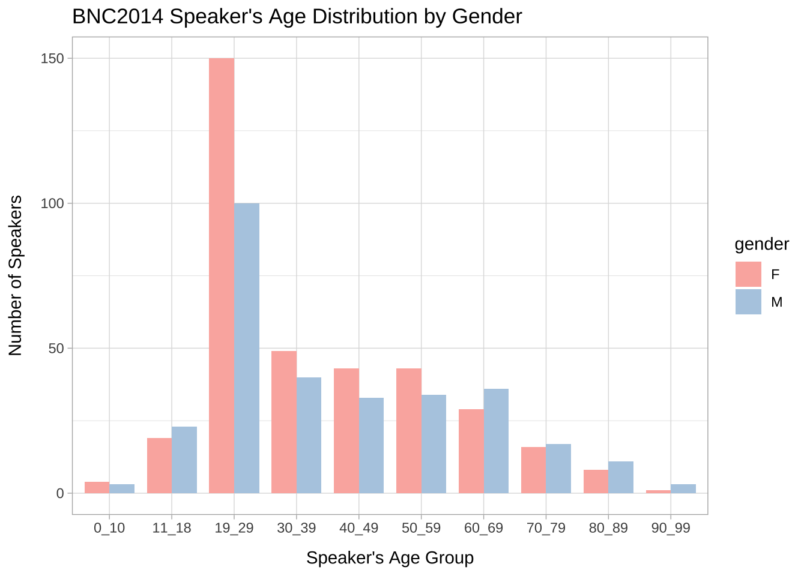

Chapter 12 XML
This chapter shows you how to process the recently released BNC 2014, which is by far the largest representative collection of spoken English collected in UK. For the purpose of our in-class tutorials, I have included a small sample of the BNC2014 in our demo_data. However, the whole dataset is now available via the official website: British National Corpus 2014. Please sign up for the complete access to the corpus if you need this corpus for your own research.
12.1 BNC Spoken 2014
XML is similar to HTML. Before you process the data, you need to understand the structure of the XML tags in the files.
Usually we would start from the documentation of the corpus. Please read The BNC 2014: User Manual amd Reference Guide for more detail.
Other than that, the steps are pretty much similar to what we have learned before.
First, we read the XML using read_html():
Now it is intuitive that our next step is to extract all utterances (with the tag of <u>...</u>) in the XML file. So you may want to do the following:
## [1] "\r\nanhourlaterhopeshestaysdownratherlate"
## [2] "\r\nwellshehadthosetwohoursearlier"
## [3] "\r\nyeahIknowbutthat'swhywe'reanhourlateisn'tit?mmI'mtirednow"
## [4] "\r\n"
## [5] "\r\ndidyoutext--ANONnameM"
## [6] "\r\nyeahyeahhewrotebacknobotherlad"See the problem?
Using the above method, you lose the word boundary information from the corpus.
What if you do the following?
## [1] "an" "hour" "later" "hope" "she" "stays" "down"
## [8] "rather" "late" "well" "she" "had" "those" "two"
## [15] "hours" "earlier" "yeah" "I" "know" "but"At the first sight, probably it seems that we have solved the problem but we have not. There are even more problems created:
- Our second method does not extract non-word tokens within each utterance (e.g.,
<pause .../>,<vocal .../>) - Our second method loses the utterance information (i.e., we don’t know which utterance each word belongs to)
So we cannot extract <u> elements all at once; nor can we extract all <w> elements all at once. Probably we need to process each <u> node one at a time.
First, let’s get all the <u> nodes.
## {html_node}
## <u n="1" who="S0024" trans="nonoverlap" whoconfidence="high">
## [1] <w pos="AT1" lemma="a" class="ART" usas="Z5">an</w>
## [2] <w pos="NNT1" lemma="hour" class="SUBST" usas="T1:3">hour</w>
## [3] <w pos="RRR" lemma="later" class="ADV" usas="T4">later</w>
## [4] <pause dur="short"></pause>
## [5] <w pos="VV0" lemma="hope" class="VERB" usas="X2:6">hope</w>
## [6] <w pos="PPHS1" lemma="she" class="PRON" usas="Z8">she</w>
## [7] <w pos="VVZ" lemma="stay" class="VERB" usas="M8">stays</w>
## [8] <w pos="RP" lemma="down" class="ADV" usas="Z5">down</w>
## [9] <pause dur="short"></pause>
## [10] <w pos="RG" lemma="rather" class="ADV" usas="A13:5">rather</w>
## [11] <w pos="JJ" lemma="late" class="ADJ" usas="T4">late</w>Take the first node in the XML document for example, each utterance node includes words as well as non-word tokens (i.e., paralinguistic annotations <pause ...></pause>). We can retrieve:
- words in an utterance
- lemma forms of all words in the utterance
- pos tags of all words in the utterance (BNC2014 uses UCREL CLAWS6 Tagset)
- paralinguistic tags in the utterance
## [1] "an" "hour" "later" "" "hope" "she" "stays" "down"
## [9] "" "rather" "late"## [1] "AT1" "NNT1" "RRR" NA "VV0" "PPHS1" "VVZ" "RP" NA
## [10] "RG" "JJ"## [1] "a" "hour" "later" NA "hope" "she" "stay" "down"
## [9] NA "rather" "late"In the above extraction of words, parts-of-speech tags, and lemma forms of each word token in the utterance, there are NA’s in the return. Do you know why?
For each utterance, the XML file provides also the metadata information for each utterance, including:
- its unique index (
n) - speaker id (
who) - transition type (
trans, i.e., whether or not the transition between turns was overlapping) - attribution confidence (
whoconfidence, whether or not the transcriber was confident that they had correctly identified the speaker of the turn)
## n who trans whoconfidence
## "1" "S0024" "nonoverlap" "high"Exercise 12.1 Now we know how to extract token-level information and utterance-level annotation from each utterance.
Please come up with a way to extract all relevant linguistic data from all utterances in the file S2A5-tgd.xml, including their word and non-word tokens as well as their metadata.
Ideally, the resulting data frame should consist of rows being the tokens of the utterances, and columns including the attributes and strings of each token.
Most importantly, the data frame should include not only the strings of the tokens, but at the same time for the word tokens, it should preserve the BNC token-level annotations of part-of-speech tags, lemmas, and semantic tags (i.e., usas).
Also, each token is connected to the utterance-level metadata, such as the utterance ID, speaker ID etc.
A sample utterance-based data frame is provided below.12.2 Process the Whole Directory of BNC2014 Sample
12.2.1 Define Function
In Section 12.1, if you have figured out how to extract the token-based data frame from all utterances in an XML file, you can easily wrap the whole procedure as one function. With this function, we can perform the same procedure to all the xml files of the BNC2014.
For example, let’s assume that we have defined a function:
This function takes one xml file as an argument and returns a token-based data frame, consisting of token texts and other relevant utteracne-level and token-level information from the xml.
word_df <- read_xml_bnc2014(xmlfile = "demo_data/corp-bnc-spoken2014-sample/S2A5-tgd.xml")
word_df %>%
filter(n %in% c("1","2"))Exercise 12.2 Now your job is to create this function, read_xml_bnc2014(xmlfile = "").
The function should take the path to one XML file as the input and return a token-based data frame of the XML file as shown above.
12.2.2 Process the all files in the Directory
Now we can utilize the self-defined function, read_xml_bnc2014(), and process all xml files in the demo_data/corp-bnc-spoken2014-sample/.
Also, we combine the individual data.frame returned from each XML into a bigger one, i.e., corp_bnc_df:
# file list
bnc_flist <- dir("demo_data/corp-bnc-spoken2014-sample/",full.names = T)
# extract token-based df
system.time(corp_bnc_list <- lapply(bnc_flist, read_xml_bnc2014))
# combine all df's
corp_bnc_token_df <- corp_bnc_list %>%
do.call(rbind, .) %>%
mutate(xml_id = rep(basename(bnc_flist), sapply(corp_bnc_list,nrow)))
# save file
write_csv(corp_bnc_token_df, path= "demo_data/data-corp-token-bnc2014.csv")It takes a while to process/parse all the files included in the sample directory because we parse the entire XML file and extract almost everything from the file.
You may store this corp_bnc_token_df data frame output for later use so that you don’t have to process the XML files every time you work with BNC2014.
The parsed token-based data frame of the BNC2014 is available in our demo_data/data-corp-token-bnc2014.csv:
corp_bnc_token_df <- read_csv("demo_data/data-corp-token-bnc2014.csv")
corp_bnc_token_df %>%
filter(xml_id == "S2A5-tgd.xml" & n == "1")12.3 Metadata
The best thing about BNC2014 is its rich demographic information relating to the settings and speakers of the conversations collected. The whole corpus comes with two metadata sets:
bnc2014spoken-textdata.tsv: metadata for each text transcriptbnc2014spoken-speakerdata.tsv: metadata for each speaker ID
These two metadata sets allow us to get more information about each transcript as well as the speakers in those transcripts.
12.3.1 Text Metadata
There are two files that are relevant to the text metadata:
bnc2014spoken-textdata.tsv: This file includes the header/metadata information of each text filemetadata-fields-text.txt: This file includes the column names/meanings of the previous text metadata tsv, i.e.,bnc2014spoken-textdata.tsv.
bnc_text_meta <- read_tsv("demo_data/corp-bnc-spoken2014-metadata/bnc2014spoken-textdata.tsv", col_names = FALSE)
bnc_text_metabnc_text_meta_names <-read_tsv("demo_data/corp-bnc-spoken2014-metadata/metadata-fields-text.txt", skip =2, col_names = F)
bnc_text_meta_names12.3.2 Speaker Metadata
There are two files that are relevant to the speaker metadata:
bnc2014spoken-speakerdata.tsv: This file includes the demographic information of each speakermetadata-fields-speaker.txt: This file includes the column names/meanings of the previous speaker metadata tsv, i.e.,bnc2014spoken-speakerdata.tsv.
bnc_sp_meta <- read_tsv("demo_data/corp-bnc-spoken2014-metadata/bnc2014spoken-speakerdata.tsv", col_names = F)
bnc_sp_metabnc_sp_meta_names <- read_tsv("demo_data/corp-bnc-spoken2014-metadata/metadata-fields-speaker.txt", skip = 3, col_names = F)
bnc_sp_meta_names12.4 BNC2014 for Socio-linguistic Variation
Now with both the text-level and speaker-level metadata, bnc_text_meta and bnc_sp_meta, we can easily connect the utterances to speaker and text profiles using their unique ID’s.
BNC2014 was born for the study of socio-linguistic variation. Here I would like to show you some naive examples, but you should get the ideas and the potentials of BNC2014.
12.5 Lexical Analysis
With the token-based data frame, we can perform lexical analysis on the lexical variations on specific social dimensions.
12.5.1 Word Frequency vs. Gender
In this section, I would like to demonstrate how to explore the gender differences in language.
Let’s assume that we like to know which adjectives are most frequently used by men and women.
corp_bnc_adj_gender <- corp_bnc_token_df %>%
filter(str_detect(pos, "^(JJ[RT]?$)")) %>%
left_join(bnc_sp_meta, by = c("who"="spid")) %>%
mutate(gender = factor(gender, levels=c("F","M"))) %>%
filter(!is.na(gender))
corp_bnc_adj_gender %>% head(100)12.5.2 Frequency and Keyword Analysis
After we extract word tokens that are adjectives, we can create a frequency list:
freq_adj_by_gender <- corp_bnc_adj_gender %>%
count(gender, lemma, sort = T)
freq_adj_by_gender %>%
group_by(gender) %>%
top_n(10, n) %>%
ungroup %>%
arrange(gender, desc(n))- Female wordcloud
require(wordcloud2)
freq_adj_by_gender %>%
filter(gender=="F") %>%
top_n(100,n) %>%
select(lemma, n) %>%
wordcloud2(size = 2, minRotation = -pi/2, maxRotation = -pi/2)
- Male wordcloud
freq_adj_by_gender %>%
filter(gender=="M") %>%
top_n(100,n) %>%
select(lemma, n) %>%
wordcloud2(size = 2, minRotation = -pi/2, maxRotation = -pi/2)Exercise 12.3 Which adjectives are more often used by male and female speakers? This should be a statistical problem. We can in fact extend our keyword analysis (cf. Chapter 7) to this question.
Please use the statistics of keyword analysis to find out the top 20 adjectives that are strongly attracted to female and male speakers according to G2 statistics. Please include in the analysis words whose frequencies >= 20 in the entire corpus.
Also, please note the problem of theNaN values out of the log().
12.6 Constructions Analysis
12.6.1 From Token-based to Turn-based Data Frame
We can also conduct analysis of specific constructions. Because constructions often span word boundaries, what we have right now is a token-based data frame of the BNC2014.
For construction or multiword-unit analysis, we can convert the token-based DF into a turn-based DF, but keep necessary token-level annotations relevant to your research project.
In this demonstration, I would like to convert the token-based DF into a turn-based DF, and keep the strings of word forms as well as parts-of-speech tags of words for each token.
But for non-word tokens, we use the name of the tag, enclosed by < and >, to represent the nature of the extralinguistic annotations in the utteracnes.
corp_bnc_utterance_df <- corp_bnc_token_df %>%
group_by(xml_id, n, who, trans, whoconfidence) %>%
nest %>%
ungroup
extract_wordtag_string <- function(u_df){
utterance_df <- u_df
cur_text <-utterance_df$text
cur_pos <- utterance_df$pos
tag_index <-which(utterance_df$name != "w")
if(length(tag_index)>0){
cur_text[tag_index] <- paste("<",utterance_df$name[tag_index],">", sep="")
cur_pos[tag_index] <- paste("<",utterance_df$name[tag_index],">", sep="")
}
paste(cur_text, cur_pos, sep = "_", collapse=" ")
}
corp_bnc_utterance_df %>%
mutate(utterance = map_chr(data, extract_wordtag_string)) %>%
select(-data) -> corp_bnc_utterance_df
corp_bnc_utterance_df %>% head(50)With the above utterance-based DF of the corpus, we can extract constructions or morphosyntactic patterns from the utterance column, utilizing the parts-of-speech tags provided by BNC2014.
12.6.2 Degree ADV + ADJ
In this section I would like to show you an example where we can extend our lexical analysis to a particular syntactic pattern. Specifically, I like to look at the adjectives that are emphasized in conversations (e.g., too bad, very good, quite cheap) and examine how these emphatic adjectives may differ in speakers of different genders.
Here we define our patterns, utilizing the POS tags and the regular expressions: [^_]+_RG [^_]+_JJ
- We first extract the target patterns by converting the utterance-based DF into a pattern-based DF. We at the same time link each match with the speaker metadata.
corp_bnc_pat_gender <- corp_bnc_utterance_df %>%
unnest_tokens(pattern,
utterance,
token = function(x) str_extract_all(x, "[^_ ]+_RG [^_ ]+_JJ"),
to_lower = F) %>%
left_join(bnc_sp_meta, by = c("who"="spid"))
corp_bnc_pat_gender %>% head(100)- Then we can create pattern freqeucies by genders.
freq_pat_by_gender <- corp_bnc_pat_gender %>%
mutate(pattern = str_replace_all(pattern, "_[^_ ]+","")) %>% # remove pos tags
select(gender, pattern) %>%
count(gender, pattern, sort=T)
# print top 100
freq_pat_by_gender %>%
group_by(gender) %>%
top_n(10,n) %>%
ungroup %>%
arrange(gender, desc(n))- We can also create wordclouds for the patterns by gender
# wordcloud
freq_pat_by_gender %>%
filter(gender=="F") %>%
top_n(100, n) %>%
select(pattern, n) %>%
wordcloud2(size = 2, minRotation = -pi/2, maxRotation = -pi/2)
freq_pat_by_gender %>%
filter(gender=="M") %>%
top_n(100, n) %>%
select(pattern, n) %>%
wordcloud2(size = 2, minRotation = -pi/2, maxRotation = -pi/2)Exercise 12.4 In the previous task, we have got the frequency list of the patterns (i.e., “Adverb + Adjective”) by gender, i.e., freq_pat_by_gender.
Please create a wide version of the frequency list, where each row is a pattern type and the columns include the frequencies of the patterns in male and female speakers, as well as the dispersion of the pattern in male and female speakers.
A sample has been provided below. Dispersion is defined as the number of speakers who use the pattern at least once.Exercise 12.5 So far we have been looking at the constructional schema of ADV + ADJ. Now let’s examine further how adjectives that are emphasized differ among speakers of different genders.
That is, do male speakers tend to emphasize adjectives that are different from those that are emphasized by females?
Now it should be clear to you that which adjectives are more likely to be emphasized by ADV in male and female utterances should be a statistical question.
Please use the statistics G2 from keyword analysis to find out the top 10 Adjectives that are strongly attracted to female and male speakers according to G2 statistics. Please include in the analysis adjectives whose dispersion >= 2 in the respective corpus, i.e., adjectives that have been used by at least TWO different male or female speakers.
Also, please note the problem of theNaN values out of the log().
- You first need to get the frequency list of the ajectives that occur in this constructional schema, ADV + ADJ:
- Then you convert the frequency list from a long format into a wide format for keyness computation.
- With the above distributional information, you can compute the keyness of the adjectives.
Exercise 12.6 Please analyze the verbs that co-occur with the first-person pronoun I in BNC2014 in terms of speakers of different genders. Please create a frequency list of the verbs that follow the first person pronoun I in demo_data/corp-bnc-spoken2014-sample. Verbs are defined as any words whose POS tag starts with VV.
- All verb types on the top 100 lists of male and female speakers:
- Female Wordcloud
- Male Wordcloud